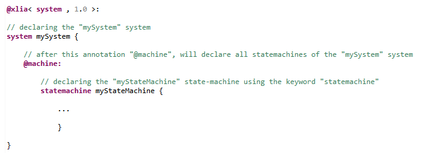

Machine type : statemachine
In a XLIA file, the other high level machines that aren't the "system" are modeled by "statemachine" machines.
By default, when no precisions are given, the moc of a state-machine is "or".
Declaring state-machines
To declare a "statemachine", we use the keyword "statemachine" :

Uses of the state-machine
Machines of type "statemachine" can be used to model two things :
Body of the state-machine
Statemachines and what they do is mainly defined by their sub-componenets. As for all machines, we list system sub-components in sections introduced by a "@XXX:" keyword. Those sections gather the declarations of all sub-components of a given type.
For the "statemachine" type of machine, the most important sections to know about are :
- Generally speaking :
- any section in which we can define objects of type "var", "port" and "type" as attributes of the statemachine such as "@property:"
- If we use the statemachine as an automaton :
- the "@region:" section, in which we list all the "state" submachines which corresponds to the possible states in which the automaton can be
- If we use the statemachine as a subsystem :
- the "@machine:" section, in which we list all the "statemachine" submachines which corresponds to the automata that interact within the substystem
- the "@com:" section, in which we describe the interactions between subsubmachines or between subsubmachines and the subsystem